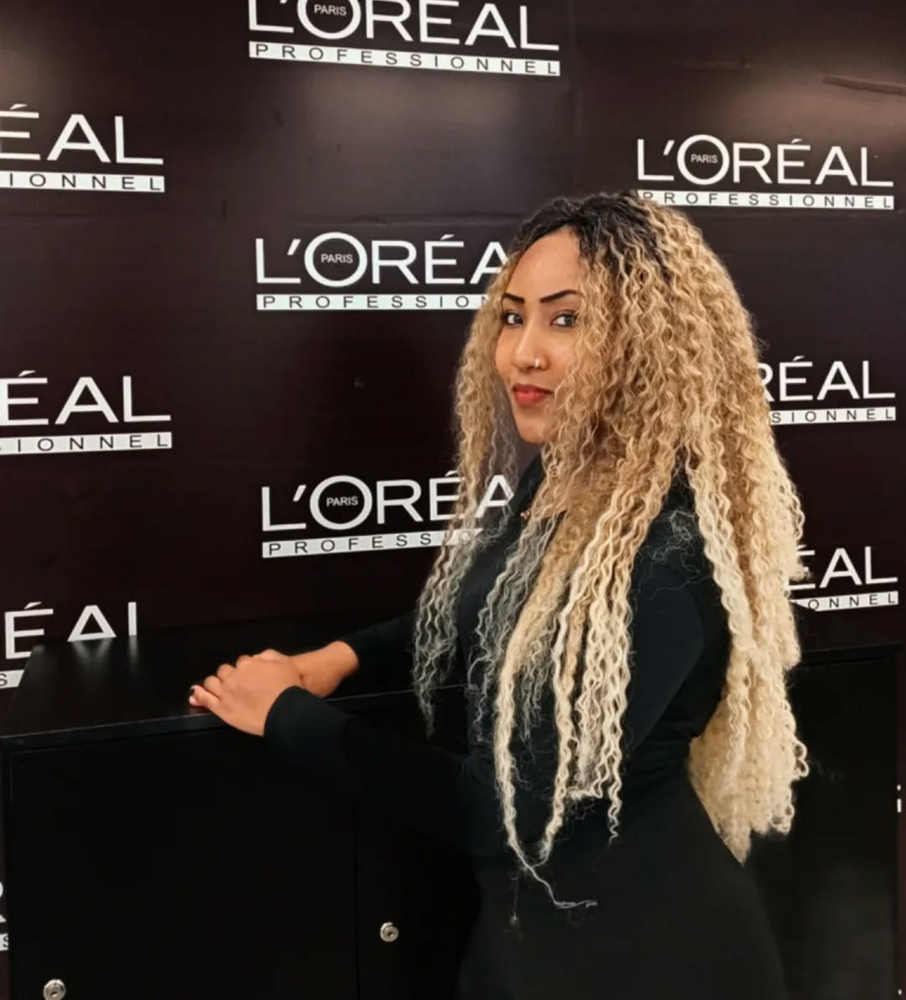
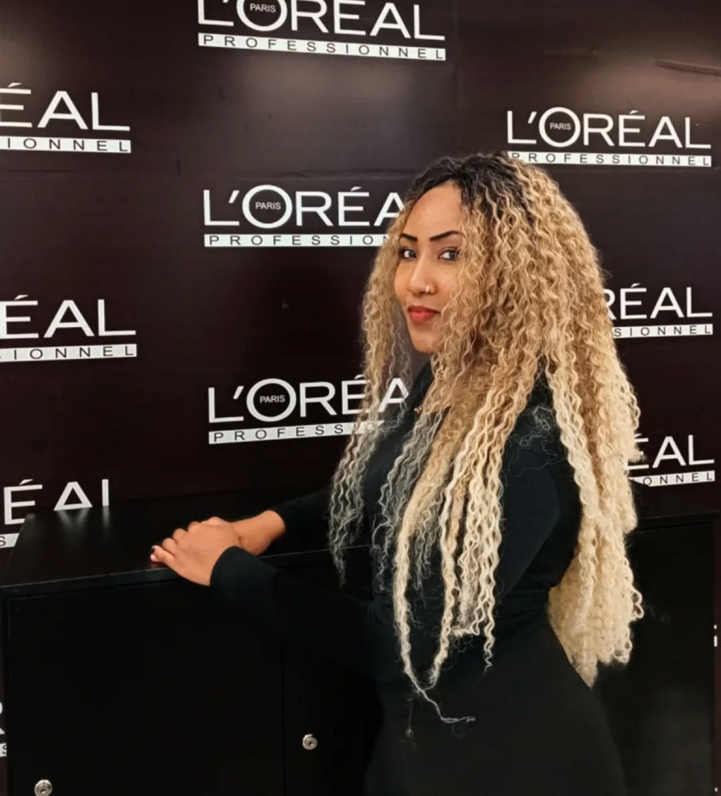
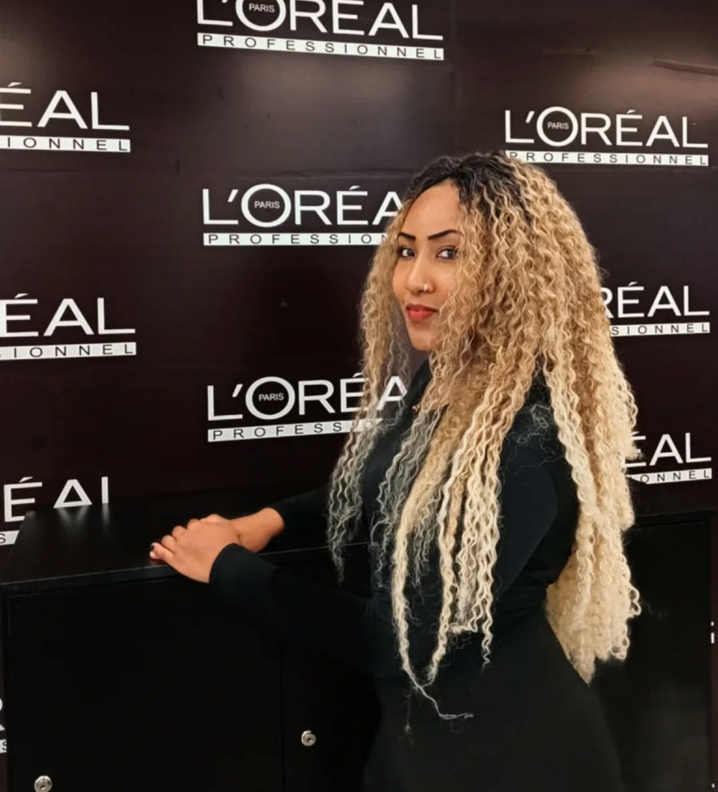
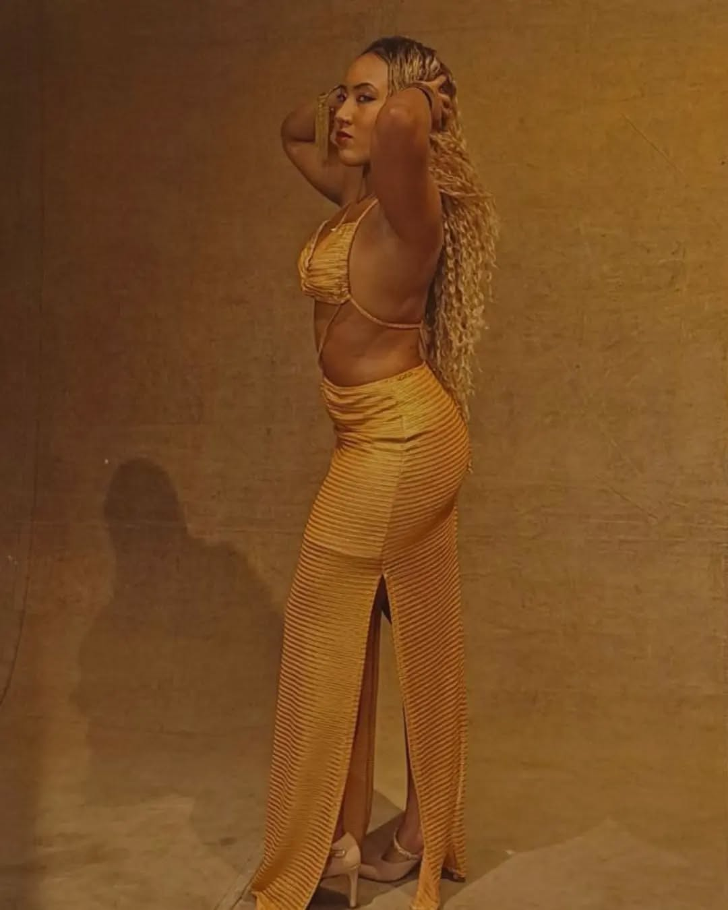
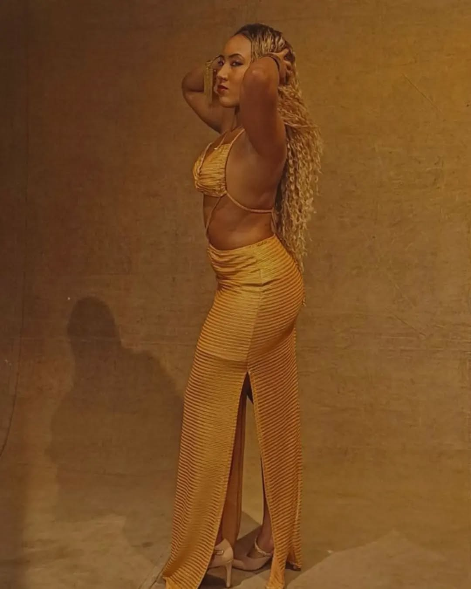

Nascida em Belo Horizonte e criada em São Paulo, Elisa carrega na bagagem uma mistura rica de cultura, elegância e atitude. Com um olhar marcante e uma beleza que celebra com orgulho suas raízes afro-brasileiras, ela vem se consolidando como um nome em ascensão no cenário da moda nacional. Eleita Miss São Paulo 2023, já realizou participações em campanhas de beleza com a L'Oréal e outros projetos voltados para maquiagem e autoestima. Com presença forte e naturalidade diante das câmeras, ela representa uma geração de modelos que não apenas vestem tendências, mas também inspiram representatividade e autenticidade na moda brasileira.


 


Consultoria Artística com Robson Lima
Direcionamento de carreira e imagem profissional

Teatro, postura e fotogenia, moda e acessórios, expressão corporal.

Selftest: Como gravar testes de elenco em vídeo com qualidade, interpretando corretamente as cenas e mostrando o melhor de si.
Atuação: Técnicas de interpretação para TV, cinema e teatro. Pode ter incluído leitura de roteiro, criação de personagem e exercícios de cena.

Introdução à língua espanhola com foco no vocabulário artístico. Ideal para expandir oportunidades internacionais.